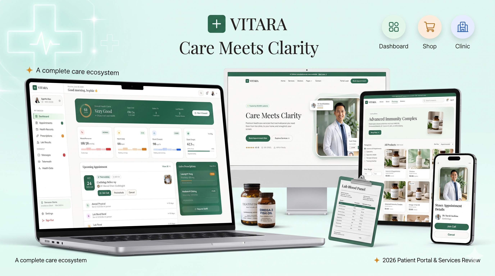
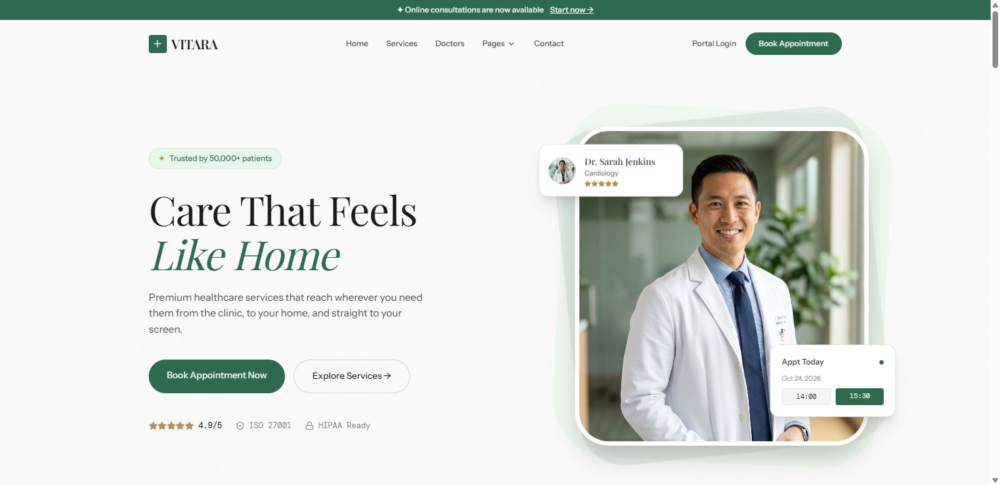
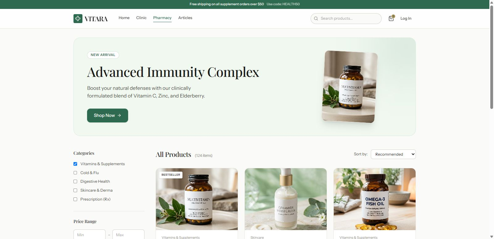
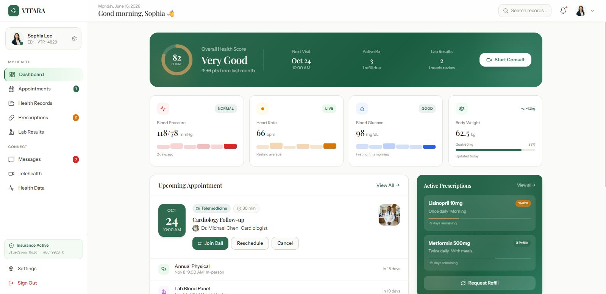

Vitara Medical and Digital Health Template
Vitara adalah template website modern untuk klinik, rumah sakit, layanan konsultasi kesehatan, dan produk digital health. Tampilan dibuat profesional, bersih, dan mudah disesuaikan untuk kebutuhan brand kesehatan.

Desain Kesehatan Modern
Cocok untuk brand medical yang membutuhkan tampilan profesional, bersih, dan mudah dipercaya pengunjung.
Siap Untuk Landing Page
Struktur halaman mendukung promosi layanan, fitur digital health, CTA appointment, dan informasi produk kesehatan.
Responsif
Layout dibuat adaptif agar tetap nyaman dilihat di desktop, tablet, maupun mobile.
Preview Halaman
Beberapa tampilan utama dari theme Vitara.



Gunakan Vitara Untuk Project Kesehatan
Lihat demo langsung atau download template melalui Github.